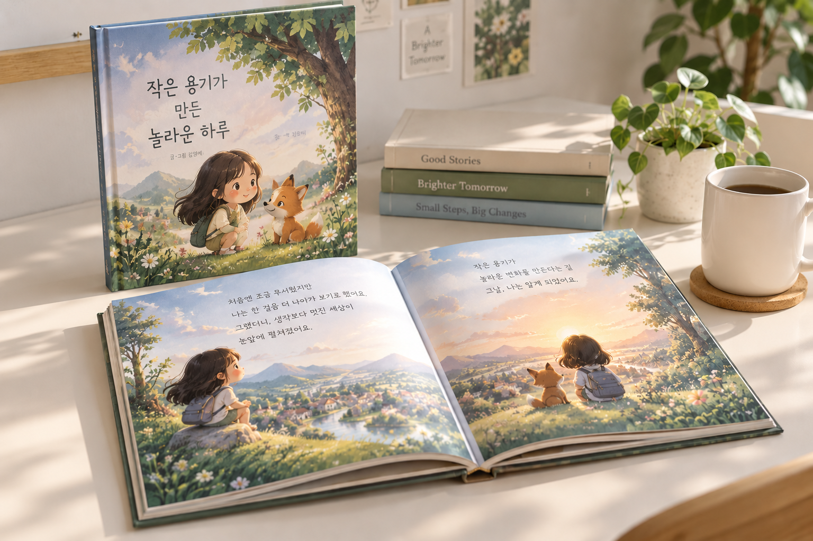

PROGRAM 01 / 창작 · 프로젝트형
AI로 완성하는
나만의 동화책
스토리 기획부터 AI 이미지와 편집까지.
생각 속 이야기를 나만의 디지털 스토리북으로 만듭니다.
AI·디지털 활용 전문강사 김정미

- 교육 대상
- 성인·시니어
생성형 AI 입문 학습자 - 운영 회기
- 체험형 1~2회기
심화 4~8회기 협의 - 교육 결과물
- 나만의 이야기를 담은
디지털 스토리북
01 / LEARNING GOALS
이야기를 기획하고,
내 손으로 완성합니다.
- 01
이야기의 방향 정하기
생성형 AI를 활용해 이야기의 주제와 방향을 설정하고, 스토리의 기본 구조를 기획합니다.
- 02
내 이야기로 다듬기
이야기에 맞는 글과 이미지를 생성하고, AI가 만든 결과물을 자신의 의도에 맞게 수정·보완합니다.
- 03
한 권의 스토리북 만들기
글과 이미지를 구성·편집해 디지털 스토리북을 완성하고, 다양한 방식으로 공유합니다.
02 / CURRICULUM
이해부터 완성까지,
네 단계로 이어지는 창작.
교육 대상과 운영 회기에 따라 조정하는
단계별 교육 내용입니다.
- 01
생성형 AI와 스토리북 제작 이해
- 생성형 AI의 개념과 콘텐츠 제작 과정 이해하기
- 디지털 스토리북의 주요 구성 요소와 제작 흐름 살펴보기
- 저작권, 개인정보 보호와 올바른 AI 활용 방법 알아보기
- 02
스토리 기획 및 원고 작성
- 이야기의 주제와 전달하고 싶은 메시지 정하기
- 등장인물·배경·사건 등 이야기의 주요 요소 구성하기
- 생성형 AI를 활용해 이야기 아이디어 구체화하기
- 이야기 흐름에 맞게 원고를 작성하고 수정·보완하기
- 03
스토리북 이미지 제작 및 편집
- 이야기의 내용과 분위기에 맞는 이미지 표현 방향 설정하기
- 장면을 효과적으로 표현하는 이미지 프롬프트 작성하기
- AI 이미지를 제작하고 적절한 결과물 선택·수정하기
- Canva로 글과 이미지를 구성·편집하기
- 04
디지털 스토리북 완성 및 공유
- 전체 내용과 디자인을 검토해 결과물 보완하기
- 글과 이미지를 결합해 디지털 스토리북 완성하기
- 플립북 등 적절한 디지털 방식으로 공유하기
- 서로의 작품을 감상하고 제작 경험 나누기
03 / PROGRAM GUIDE
교육 현장에 맞춰
함께 조율합니다.
활용 도구
ChatGPT·Gemini·Claude 등 생성형 AI와 Canva를 활용합니다. 완성한 작품은 플립북 등 디지털 방식으로 공유합니다.
운영 방식
체험형 1~2회기부터 심화 4~8회기까지 협의합니다. 인쇄·제본·출판은 운영 방식에 따라 별도 조율합니다.
교육 내용은 교육 현장에 따라 일부 수정될 수 있습니다.
김정미 강사 소개 보기 ↗LET’S MAKE IT POSSIBLE
나만의 이야기가
한 권의 책이 되는 시간.
교육 내용이나 일정이 정해지지 않아도 괜찮습니다.
편하게 문의 남겨주시면 확인 후 연락드리겠습니다.